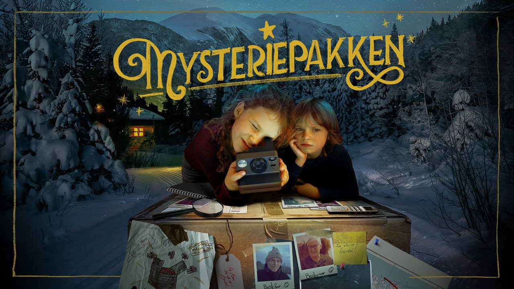

Kommende arrangementer i regi av Selbu kommune — bygdekino, teater og konserter.
Siden oppdateres automatisk.

Mysteriepakken
– kl. 19.30
Tælet Kultursal, Bellvegen 18, 7580 Selbu
Familiefilm · 86 min · Aldersgrense A · Målgruppe: Alle, Familie · Billett 110 kr
Historien bak filmen er like gåtefull som den er sann. Regissør Silje Evensmo Jacobsens film tar utgangspunkt i et ekte og lokalt forankret mysterium. Hvert år mottar to søsken og deres familie en anonym pakke sendt fra Arendal. Avsenderen er ukjent, og undringen vokser i takt med årene. Når barna bestemmer seg for å finne ut hvem som står bak, utvikler det seg til en engasjerende og rørende fortelling om familie, tilhørighet og betydningen av små handlinger som setter spor.
Komedie / Action · 110 min · Aldersgrense 9 · Målgruppe: Barn, Familie · Billett 130 kr
Etter 40 år som lojal hjemmeværende kone, får Annema sparken - til fordel for en yngre modell. Sammen med karrierekvinnen Nina, som går ut på dato for arbeidslivet, og rebellen Mona, bestemmer trioen seg for å pensjonere seg fra lovlydigheten. De planlegger et umulig kupp: å rane selveste Oljefondet. En ellevill komedie om en høyst uventet førtidspensjon.
Barnefilm / Animasjon / Familiefilm · 73 min · Aldersgrense A · Målgruppe: Alle, Familie · Billett 110 kr
Da ni år gamle Mari en natt våkner og oppdager en nisse på soverommet sitt, blir det starten på et juleeventyr utenom det vanlige. Med en gjenglemt nissevott som eneste spor legger hun, farmor og en meget skeptisk pappa ut på en eventyrlig ferd for å finne julenissen, mens vottens eier, nissens lille hjelper Stompen, gjør alt han kan for å stoppe dem. For Julenissens verksted kan nemlig ikke bli oppdaget, det vil være katastrofe!
Ferden går gjennom skog, hei og vakre vinterlandskap. Men utfordringene er også mange - de må også forbi skogens vokter, Kjerringa med staven, og kjempe seg gjennom en fryktelig snøstorm. Reisen er ikke bare spennende - den åpner også familiens øyne for hverandre, og de innser til slutt hva julens virkelige magi er.
Gjør klar for årets julefilm for hele familien, spekket med julestemning og kjente Thorbjørn Egner-sanger, som Kaptein Sorte Bill, Dyrene i Afrika og Det snør det snør – fremført av noen av landets fremste artister, deriblant Sissel Kyrkjebø.
Drama · 155 min · Aldersgrense 12 · Målgruppe: Barn, Ungdom, Familie · Billett 130 kr
Den prisbelønte regissøren Hans Petter Moland bringer Knut Hamsuns udødelige mesterverk Markens grøde til det store lerretet, med Herbert Nordrum («Verdens verste menneske») og Asta Kamma August («Hendelser ved Vann») i hovedrollene.
Det er sen høst. Isak kjemper for å overleve i villmarken. Over fjellet dukker en dag Inger opp. Ut av et møte i nød vokser kjærligheten. I nådeløs natur kjemper Isak og Inger for å skape et liv sammen. Med kjærligheten som drivkraft bygger de gården Sellanraa opp fra ingenting. Når en mørk hemmelighet kommer til overflaten, blir kjærligheten satt på prøve.I andre roller møter vi blant andre Gard B. Eidsvold, Anders Baasmo, Oddgeir Thune og Sjur Vatne Brean.Filmen er basert på Hamsuns Nobelprisvinnende roman fra 1917, og er en av de viktigste verkene i norsk kulturhistorie. Det er en storslått fortelling om kjærlighet og menneskets plass i den vakre og ubarmhjertige naturen.